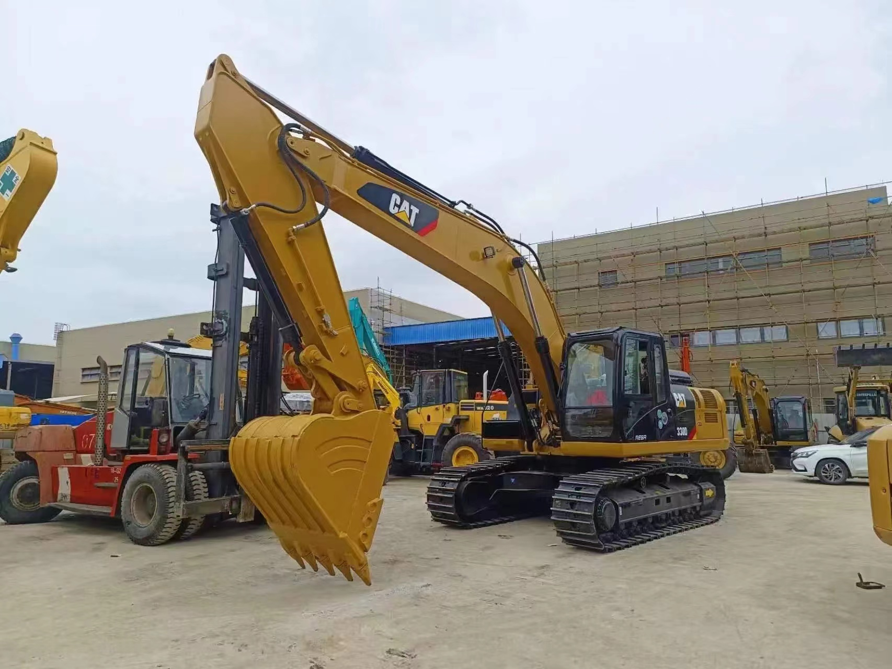

Refurbished Caterpillar Cat 330 Excavator
The Caterpillar Cat 330 Excavator is one of the most reliable and versatile machines in the construction industry. Known for its exceptional power, efficiency, and operational capabilities, the Cat 330 is a preferred choice for large-scale projects like construction, mining, and demolition. When refurbished, this excavator offers great value, providing a high-performance machine at a more affordable price.
Honestly, it's almost impossible to buy a brand new excavator from China. They either don't exist or are made in China. If a Chinese seller tells you their Caterpillar/Komatsu/Volvo/Kobelco/Hitachi is brand new, they're lying. Therefore, a refurbished excavator is your best bet.

Here are the detailed specifications for a refurbished Caterpillar Cat 330 excavator:
Operating Weight and Dimensions
- Operating Weight: 29,700–30,500 kg
- Transport Length: ~10.6 meters (34 ft 9 in)
- Transport Width: ~3.2 meters (10 ft 6 in)
- Transport Height: ~3.2 meters (10 ft 6 in)
- Tail Swing Radius: ~3.7 meters
- Track Width: 600–800 mm standard
- Counterweight: ~6.5 metric tons
Engine and Powertrain
- Engine Model: Cat C7.1 (Tier 4 Final / EU Stage V compliant in newer units)
- Rated Power Output: ~202–225 kW (271–302 hp) @ 1,800 rpm
- Fuel Tank Capacity: ~620 liters
- Travel Speed: 3.5–5.0 km/h
- Swing Speed: ~9.0 rpm
- Altitude Capability: Up to 3,000 m without derate
Hydraulic System
- Main Pump Type: Electro-hydraulic, load-sensing piston pumps
- Flow Rate: ~2 × 360–380 L/min
- System Pressure: Up to 35 MPa
- Hydraulic Oil Capacity: ~550 liters
- Smart Modes:
- Auto Dig Boost
- Heavy Lift Mode
- Auto Hydraulic Warm-Up
Performance Metrics
- Bucket Capacity: 1.2–2.2 m³ (SAE heaped)
- Max Digging Depth: ~7.0–7.4 meters
- Max Reach (Horizontal): ~10.8–11.2 meters
- Max Dump Height: ~6.8–7.2 meters
- Bucket Digging Force: ~190–210 kN
- Arm Digging Force: ~140–160 kN
Cab and Operator Features
- Cab Type: ROPS/FOPS certified
- Display: High-resolution touchscreen with customizable interface
- Controls: Electro-hydraulic joysticks with programmable response
- Comfort: Heated air-suspension seat, climate control, low-noise cab
- Visibility: Panoramic glass, rear and side cameras, LED lighting
Smart Features and Efficiency
- Technology Suite:
- Cat Grade with 2D
- Grade Assist
- Payload Measurement
- Work Tool Recognition
- Operating Modes: Power, Smart, ECO
- Emissions Control: DOC + DPF + SCR (no operator input required)
- Ambient Capability:
- High temp: up to 52°C
- Cold start: down to –18°C
Attachments Compatibility
- Standard Bucket: 1.2–2.2 m³
- Optional Tools: Hydraulic breaker, demolition shear, ripper, compactor
- Quick Coupler: Hydraulic (Cat Pin Grabber or Smart Coupler)
Refurbishment Scope
Refurbished Cat 330 units typically include:
- Engine Overhaul: Turbocharger, injectors, cooling system, emissions service
- Hydraulic Restoration: Pump recalibration, valve block testing, hose replacement
- Electrical Diagnostics: Monitor, sensors, wiring harness, telematics
- Cab Reconditioning: Seat, joysticks, HVAC, touchscreen UI, repainting
- Structural Repairs: Boom/bucket welding, bushing replacement, undercarriage rebuild
Overview of the Caterpillar Cat 330 Excavator
The Caterpillar Cat 330 is designed for heavy-duty applications, combining robust power with advanced technology to maximize productivity and reduce operating costs. Whether it’s digging, lifting, or handling materials, the Cat 330 excels in a variety of tough environments.
The excavator offers a variety of features that enhance productivity, fuel efficiency, and operational lifespan. With a reputation for durability and reliability, the Cat 330 is ideal for demanding construction projects where efficiency and precision are key.
Key Specifications of the Caterpillar Cat 330
-
Operating Weight: Approximately 30,000 - 34,000 kg (66,140 - 74,960 lbs)
-
Engine Power: 210 kW (282 hp)
-
Max Digging Depth: Around 6.4 meters (21 feet)
-
Max Reach: Up to 11 meters (36 feet)
-
Bucket Capacity: Typically 1.3 to 2.3 cubic meters (46 to 81 cubic feet)
-
Fuel Tank Capacity: Around 400 liters (105 gallons)
-
Travel Speed: Maximum speed of 5.5 km/h (3.4 mph)
These specifications showcase the Cat 330’s balance of power and efficiency, making it suitable for large-scale excavation and material handling tasks.
Performance and Fuel Efficiency
One of the standout features of the Caterpillar Cat 330 Excavator is its high level of performance. With a powerful engine and efficient hydraulics, the machine provides consistent output while maintaining low operational costs.
Key Performance Features:
-
High Digging and Lifting Power: The Cat 330 is equipped with a high-performance hydraulic system, delivering superior digging and lifting force. This makes it ideal for deep excavation, loading, and lifting heavy materials on job sites.
-
Improved Fuel Efficiency: The Cat 330 incorporates advanced fuel-saving technologies, including a powerful yet fuel-efficient engine. With optimized engine and hydraulic performance, the machine reduces fuel consumption while maintaining power output, lowering operating costs.
-
Advanced Hydraulics: The hydraulic system is designed for smooth and precise operation. It allows for greater control over boom, stick, and bucket movements, improving precision and speed. The advanced hydraulics also help the machine maintain high productivity throughout extended work cycles.
-
Emission Compliance: The Cat 330 meets environmental regulations for emissions, ensuring that it performs efficiently while minimizing its carbon footprint.
Durability and Construction
The Caterpillar Cat 330 is built to last, with heavy-duty components that ensure long-term durability and minimal maintenance. Its robust construction makes it well-suited for working in tough environments, such as construction sites, demolition zones, and mining operations.
Key Durability Features:
-
Heavy-Duty Undercarriage: The undercarriage is built with reinforced tracks and a strong frame to withstand the toughest terrain. It provides the necessary stability and durability for heavy lifting and digging operations.
-
Reinforced Boom and Stick: The boom and stick are designed with high-strength materials that resist wear and tear, enabling the machine to perform under heavy loads and in harsh conditions without compromising structural integrity.
-
Wear Protection: The Cat 330 features wear-resistant parts, such as hardened bucket teeth and durable seals. These parts protect the machine’s critical components from excessive wear, dirt, and debris, enhancing the overall lifespan of the equipment.
Operator Comfort and Safety
Caterpillar places a strong emphasis on operator comfort and safety, ensuring that the Cat 330 is not only easy to operate but also provides a safe environment for operators working in demanding conditions.
Key Comfort and Safety Features:
-
Ergonomic Operator Cabin: The cabin of the Cat 330 is spacious and comfortable, with an adjustable seat, climate control, and intuitive controls. This ensures that operators can work for long hours without experiencing discomfort or fatigue.
-
Improved Visibility: The Cat 330 is equipped with a large glass area and strategically placed mirrors to improve visibility, allowing operators to have a clear view of the work area. This enhances safety and reduces the risk of accidents.
-
Advanced Safety Features: The Cat 330 includes a range of safety features, such as Roll-Over Protective Structures (ROPS), Falling Object Protective Structures (FOPS), and an optional rearview camera for added safety in congested job sites.
Versatility and Attachments
The Cat 330 offers outstanding versatility with its ability to work with a wide range of attachments. These attachments allow the machine to perform various tasks, from digging and lifting to demolition and material handling.
Common Attachments for the Cat 330:
-
Buckets: Available in various sizes and configurations, including general-purpose and heavy-duty buckets for digging and material handling.
-
Hydraulic Hammers: Ideal for breaking concrete, rock, and asphalt during demolition projects.
-
Augers: Perfect for drilling deep, wide holes for foundations, posts, or utility installations.
-
Grapples: Used for handling large materials such as scrap metal, logs, and debris.
With these attachments, the Cat 330 can perform a variety of roles on the jobsite, increasing its flexibility and productivity.
Advantages of Purchasing a Refurbished Caterpillar Cat 330 Excavator
A refurbished Caterpillar Cat 330 Excavator offers numerous benefits, especially for companies looking to reduce capital expenditures while maintaining access to a high-performing, reliable machine.
Benefits of Refurbished Cat 330:
-
Lower Initial Cost: A refurbished Cat 330 offers a significantly lower price than a new unit, making it an attractive option for businesses looking to save money while still acquiring a powerful and versatile machine.
-
Thorough Inspection and Reconditioning: Refurbished Cat 330 excavators undergo a comprehensive inspection and reconditioning process. Worn-out components are replaced, and the machine is tested to ensure that it operates at optimal performance levels.
-
Warranty: Many refurbished Cat 330 excavators come with a warranty, providing peace of mind and protection against unexpected repair costs.
-
Environmentally Friendly: Purchasing a refurbished machine is an environmentally responsible choice, as it reduces the need for new manufacturing and helps extend the life of existing equipment.
Maintenance Tips for the Caterpillar Cat 330 Excavator
To maximize the performance and lifespan of your Caterpillar Cat 330, regular maintenance is essential. Here are some tips for keeping your machine in top condition:
Recommended Maintenance Practices:
-
Hydraulic System: Change the hydraulic fluid and replace filters at regular intervals. Inspect hoses and connections for leaks, and ensure proper hydraulic fluid levels to maintain optimal performance.
-
Engine Maintenance: Regularly check and change engine oil, coolant, and fuel filters. Inspect air filters to ensure they are clean and free from blockages.
-
Undercarriage: Inspect the undercarriage regularly for wear and damage. Clean and lubricate the tracks and rollers to ensure smooth movement and prevent premature wear.
-
Cooling System: Monitor the radiator, fans, and cooling lines for damage or blockages. Ensure that the machine does not overheat, especially during long hours of operation in hot conditions.
Conclusion
The Caterpillar Cat 330 Excavator is a powerful, versatile, and durable machine designed for large-scale projects. Whether it’s digging, lifting, or material handling, the Cat 330 excels in providing top-tier performance and reliability. Purchasing a refurbished Cat 330 allows businesses to acquire a high-performance machine at a fraction of the cost of a new one, making it an excellent choice for contractors who want to maximize their return on investment.
With regular maintenance and proper care, a refurbished Cat 330 can continue to perform at a high level for many years, helping you complete your construction and excavation projects with efficiency and ease.
Our Commitment
- 2 years / 4000 hours warranty.
- EPA certified.
- No sweatshop labor.
Contacts

- [email protected]
- Youtube Instagram Facebook
- Navigation: G206 (Sishu Bridge) in Changfeng County, Hefei City, Anhui Province, 200 meters north to the east